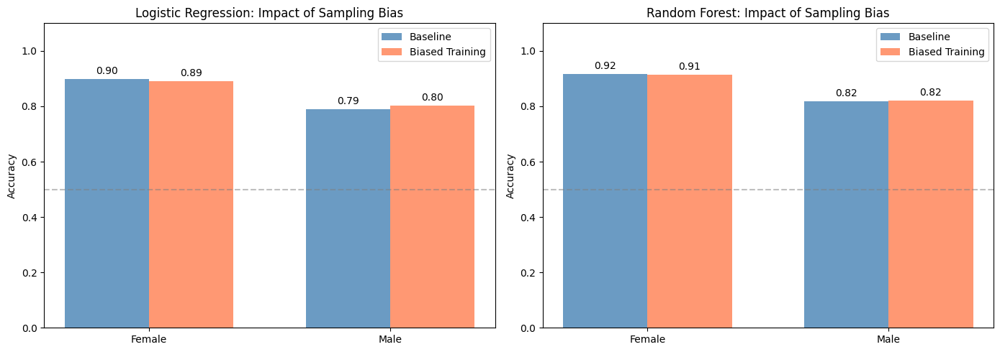
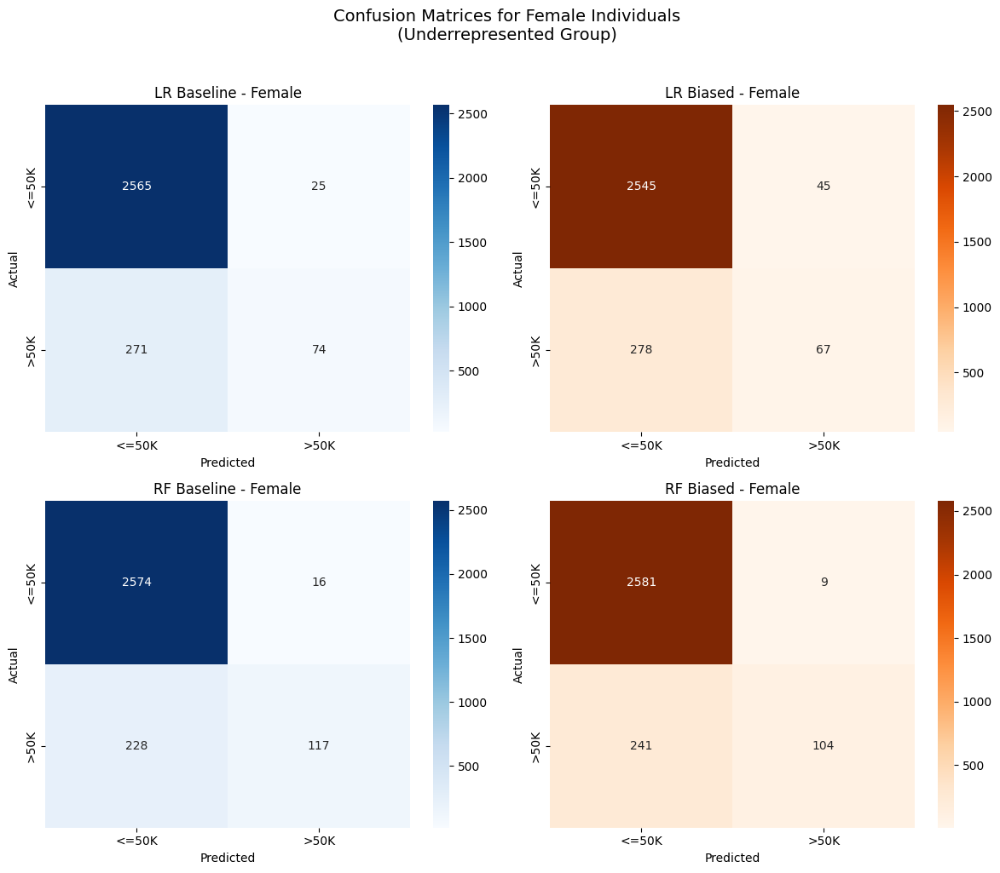

12. Evaluating Bias Impact#
Now comes the critical part: comparing how the biased models perform, especially for the underrepresented group (females).
Setup#
import pandas as pd
import numpy as np
import matplotlib.pyplot as plt
import seaborn as sns
from sklearn.model_selection import train_test_split
from sklearn.linear_model import LogisticRegression
from sklearn.ensemble import RandomForestClassifier
from sklearn.metrics import accuracy_score, confusion_matrix
from sklearn.preprocessing import StandardScaler, LabelEncoder
import warnings
warnings.filterwarnings('ignore')
np.random.seed(42)
# Load and prepare data
url = "https://archive.ics.uci.edu/ml/machine-learning-databases/adult/adult.data"
column_names = ['age', 'workclass', 'fnlwgt', 'education', 'education_num', 'marital_status',
'occupation', 'relationship', 'race', 'sex', 'capital_gain', 'capital_loss',
'hours_per_week', 'native_country', 'income']
adult_data = pd.read_csv(url, names=column_names, skipinitialspace=True, na_values='?')
adult_data = adult_data.dropna()
adult_data['target'] = (adult_data['income'] == '>50K').astype(int)
adult_data['sex'] = (adult_data['sex'] == 'Male').astype(int)
categorical_cols = ['workclass', 'marital_status', 'occupation', 'relationship', 'race']
for col in categorical_cols:
le = LabelEncoder()
adult_data[col] = le.fit_transform(adult_data[col])
feature_cols = ['age', 'workclass', 'education_num', 'marital_status',
'occupation', 'relationship', 'race', 'sex',
'capital_gain', 'capital_loss', 'hours_per_week']
X = adult_data[feature_cols]
y = adult_data['target']
X_train, X_test, y_train, y_test = train_test_split(
X, y, test_size=0.3, random_state=42, stratify=adult_data['sex']
)
# Create biased sample
def create_biased_sample(X, y, sex_col='sex', female_ratio=0.1):
female_mask = X[sex_col] == 0
male_mask = X[sex_col] == 1
X_female, y_female = X[female_mask], y[female_mask]
X_male, y_male = X[male_mask], y[male_mask]
n_female_keep = max(1, int(len(X_female) * female_ratio))
female_indices = np.random.choice(len(X_female), n_female_keep, replace=False)
X_biased = pd.concat([X_female.iloc[female_indices], X_male])
y_biased = pd.concat([y_female.iloc[female_indices], y_male])
return X_biased, y_biased
X_train_biased, y_train_biased = create_biased_sample(X_train, y_train, female_ratio=0.1)
# Train all models
scaler_baseline = StandardScaler()
X_train_scaled = scaler_baseline.fit_transform(X_train)
X_test_scaled_baseline = scaler_baseline.transform(X_test)
scaler_biased = StandardScaler()
X_train_biased_scaled = scaler_biased.fit_transform(X_train_biased)
X_test_scaled_biased = scaler_biased.transform(X_test)
lr_baseline = LogisticRegression(random_state=42, max_iter=1000)
lr_baseline.fit(X_train_scaled, y_train)
y_pred_lr_baseline = lr_baseline.predict(X_test_scaled_baseline)
rf_baseline = RandomForestClassifier(n_estimators=100, random_state=42, max_depth=5)
rf_baseline.fit(X_train_scaled, y_train)
y_pred_rf_baseline = rf_baseline.predict(X_test_scaled_baseline)
lr_biased = LogisticRegression(random_state=42, max_iter=1000)
lr_biased.fit(X_train_biased_scaled, y_train_biased)
y_pred_lr_biased = lr_biased.predict(X_test_scaled_biased)
rf_biased = RandomForestClassifier(n_estimators=100, random_state=42, max_depth=5)
rf_biased.fit(X_train_biased_scaled, y_train_biased)
y_pred_rf_biased = rf_biased.predict(X_test_scaled_biased)
print("All models trained and ready for evaluation!")
All models trained and ready for evaluation!
Overall Performance Comparison#
print("=" * 70)
print("OVERALL PERFORMANCE COMPARISON")
print("=" * 70)
print("\nLogistic Regression:")
print(f" Baseline Accuracy: {accuracy_score(y_test, y_pred_lr_baseline):.3f}")
print(f" Biased Accuracy: {accuracy_score(y_test, y_pred_lr_biased):.3f}")
print("\nRandom Forest:")
print(f" Baseline Accuracy: {accuracy_score(y_test, y_pred_rf_baseline):.3f}")
print(f" Biased Accuracy: {accuracy_score(y_test, y_pred_rf_biased):.3f}")
======================================================================
OVERALL PERFORMANCE COMPARISON
======================================================================
Logistic Regression:
Baseline Accuracy: 0.825
Biased Accuracy: 0.831
Random Forest:
Baseline Accuracy: 0.850
Biased Accuracy: 0.851
Performance by Demographic Group#
def comprehensive_group_evaluation(X_test, y_test, predictions_dict, group_col='sex'):
"""Compare multiple models' performance by group."""
X_test_reset = X_test.reset_index(drop=True)
y_test_reset = y_test.reset_index(drop=True)
results = []
for group_val in sorted(X_test_reset[group_col].unique()):
mask = X_test_reset[group_col] == group_val
group_y_test = y_test_reset[mask]
group_label = 'Female' if group_val == 0 else 'Male'
for model_name, y_pred in predictions_dict.items():
group_y_pred = y_pred[mask]
acc = accuracy_score(group_y_test, group_y_pred)
results.append({
'Group': group_label,
'Model': model_name,
'Accuracy': acc,
'Count': mask.sum()
})
return pd.DataFrame(results)
predictions = {
'LR Baseline': y_pred_lr_baseline,
'LR Biased': y_pred_lr_biased,
'RF Baseline': y_pred_rf_baseline,
'RF Biased': y_pred_rf_biased
}
results_df = comprehensive_group_evaluation(X_test, y_test, predictions)
print("\n" + "=" * 70)
print("PERFORMANCE BY SEX")
print("=" * 70)
pivot_results = results_df.pivot(index='Group', columns='Model', values='Accuracy')
pivot_results = pivot_results[['LR Baseline', 'LR Biased', 'RF Baseline', 'RF Biased']]
print("\nAccuracy by Group:")
print(pivot_results.round(3).to_string())
======================================================================
PERFORMANCE BY SEX
======================================================================
Accuracy by Group:
Model LR Baseline LR Biased RF Baseline RF Biased
Group
Female 0.899 0.890 0.917 0.915
Male 0.789 0.803 0.818 0.820
Performance Drop Analysis#
print("\n" + "-" * 70)
print("PERFORMANCE DROP DUE TO BIAS")
print("-" * 70)
for group in ['Female', 'Male']:
group_data = results_df[results_df['Group'] == group]
lr_baseline_acc = group_data[group_data['Model'] == 'LR Baseline']['Accuracy'].values[0]
lr_biased_acc = group_data[group_data['Model'] == 'LR Biased']['Accuracy'].values[0]
rf_baseline_acc = group_data[group_data['Model'] == 'RF Baseline']['Accuracy'].values[0]
rf_biased_acc = group_data[group_data['Model'] == 'RF Biased']['Accuracy'].values[0]
print(f"\n{group}:")
print(f" Logistic Regression: {lr_baseline_acc:.3f} -> {lr_biased_acc:.3f} (change: {lr_biased_acc - lr_baseline_acc:+.3f})")
print(f" Random Forest: {rf_baseline_acc:.3f} -> {rf_biased_acc:.3f} (change: {rf_biased_acc - rf_baseline_acc:+.3f})")
----------------------------------------------------------------------
PERFORMANCE DROP DUE TO BIAS
----------------------------------------------------------------------
Female:
Logistic Regression: 0.899 -> 0.890 (change: -0.009)
Random Forest: 0.917 -> 0.915 (change: -0.002)
Male:
Logistic Regression: 0.789 -> 0.803 (change: +0.014)
Random Forest: 0.818 -> 0.820 (change: +0.002)
Visualizing the Performance Gap#
fig, axes = plt.subplots(1, 2, figsize=(14, 5))
# Logistic Regression comparison
lr_data = results_df[results_df['Model'].str.contains('LR')]
x = np.arange(2)
width = 0.35
baseline_accs = [lr_data[(lr_data['Group'] == 'Female') & (lr_data['Model'] == 'LR Baseline')]['Accuracy'].values[0],
lr_data[(lr_data['Group'] == 'Male') & (lr_data['Model'] == 'LR Baseline')]['Accuracy'].values[0]]
biased_accs = [lr_data[(lr_data['Group'] == 'Female') & (lr_data['Model'] == 'LR Biased')]['Accuracy'].values[0],
lr_data[(lr_data['Group'] == 'Male') & (lr_data['Model'] == 'LR Biased')]['Accuracy'].values[0]]
bars1 = axes[0].bar(x - width/2, baseline_accs, width, label='Baseline', color='steelblue', alpha=0.8)
bars2 = axes[0].bar(x + width/2, biased_accs, width, label='Biased Training', color='coral', alpha=0.8)
axes[0].set_ylabel('Accuracy')
axes[0].set_title('Logistic Regression: Impact of Sampling Bias')
axes[0].set_xticks(x)
axes[0].set_xticklabels(['Female', 'Male'])
axes[0].legend()
axes[0].set_ylim(0, 1.1)
axes[0].axhline(y=0.5, color='gray', linestyle='--', alpha=0.5)
for bar in bars1 + bars2:
height = bar.get_height()
axes[0].annotate(f'{height:.2f}', xy=(bar.get_x() + bar.get_width()/2, height),
xytext=(0, 3), textcoords="offset points", ha='center', va='bottom', fontsize=10)
# Random Forest comparison
rf_data = results_df[results_df['Model'].str.contains('RF')]
baseline_accs_rf = [rf_data[(rf_data['Group'] == 'Female') & (rf_data['Model'] == 'RF Baseline')]['Accuracy'].values[0],
rf_data[(rf_data['Group'] == 'Male') & (rf_data['Model'] == 'RF Baseline')]['Accuracy'].values[0]]
biased_accs_rf = [rf_data[(rf_data['Group'] == 'Female') & (rf_data['Model'] == 'RF Biased')]['Accuracy'].values[0],
rf_data[(rf_data['Group'] == 'Male') & (rf_data['Model'] == 'RF Biased')]['Accuracy'].values[0]]
bars3 = axes[1].bar(x - width/2, baseline_accs_rf, width, label='Baseline', color='steelblue', alpha=0.8)
bars4 = axes[1].bar(x + width/2, biased_accs_rf, width, label='Biased Training', color='coral', alpha=0.8)
axes[1].set_ylabel('Accuracy')
axes[1].set_title('Random Forest: Impact of Sampling Bias')
axes[1].set_xticks(x)
axes[1].set_xticklabels(['Female', 'Male'])
axes[1].legend()
axes[1].set_ylim(0, 1.1)
axes[1].axhline(y=0.5, color='gray', linestyle='--', alpha=0.5)
for bar in bars3 + bars4:
height = bar.get_height()
axes[1].annotate(f'{height:.2f}', xy=(bar.get_x() + bar.get_width()/2, height),
xytext=(0, 3), textcoords="offset points", ha='center', va='bottom', fontsize=10)
plt.tight_layout()
plt.show()

Confusion Matrices for Female Individuals#
Let’s examine the confusion matrices to understand the types of errors:
fig, axes = plt.subplots(2, 2, figsize=(12, 10))
# Get female test data
female_mask = X_test.reset_index(drop=True)['sex'] == 0
y_test_female = y_test.reset_index(drop=True)[female_mask]
# LR Baseline - Female
cm_lr_baseline_female = confusion_matrix(y_test_female, y_pred_lr_baseline[female_mask])
sns.heatmap(cm_lr_baseline_female, annot=True, fmt='d', cmap='Blues', ax=axes[0, 0],
xticklabels=['<=50K', '>50K'], yticklabels=['<=50K', '>50K'])
axes[0, 0].set_title('LR Baseline - Female')
axes[0, 0].set_xlabel('Predicted')
axes[0, 0].set_ylabel('Actual')
# LR Biased - Female
cm_lr_biased_female = confusion_matrix(y_test_female, y_pred_lr_biased[female_mask])
sns.heatmap(cm_lr_biased_female, annot=True, fmt='d', cmap='Oranges', ax=axes[0, 1],
xticklabels=['<=50K', '>50K'], yticklabels=['<=50K', '>50K'])
axes[0, 1].set_title('LR Biased - Female')
axes[0, 1].set_xlabel('Predicted')
axes[0, 1].set_ylabel('Actual')
# RF Baseline - Female
cm_rf_baseline_female = confusion_matrix(y_test_female, y_pred_rf_baseline[female_mask])
sns.heatmap(cm_rf_baseline_female, annot=True, fmt='d', cmap='Blues', ax=axes[1, 0],
xticklabels=['<=50K', '>50K'], yticklabels=['<=50K', '>50K'])
axes[1, 0].set_title('RF Baseline - Female')
axes[1, 0].set_xlabel('Predicted')
axes[1, 0].set_ylabel('Actual')
# RF Biased - Female
cm_rf_biased_female = confusion_matrix(y_test_female, y_pred_rf_biased[female_mask])
sns.heatmap(cm_rf_biased_female, annot=True, fmt='d', cmap='Oranges', ax=axes[1, 1],
xticklabels=['<=50K', '>50K'], yticklabels=['<=50K', '>50K'])
axes[1, 1].set_title('RF Biased - Female')
axes[1, 1].set_xlabel('Predicted')
axes[1, 1].set_ylabel('Actual')
plt.suptitle('Confusion Matrices for Female Individuals\n(Underrepresented Group)', fontsize=14, y=1.02)
plt.tight_layout()
plt.show()

Fairness Metrics#
Let’s calculate common fairness metrics to quantify the bias:
def calculate_fairness_metrics(y_test, y_pred, sensitive_attr):
"""Calculate fairness metrics across groups."""
metrics = {}
for group_val in sorted(sensitive_attr.unique()):
mask = sensitive_attr == group_val
group_y_test = y_test[mask]
group_y_pred = y_pred[mask]
tp = ((group_y_pred == 1) & (group_y_test == 1)).sum()
fn = ((group_y_pred == 0) & (group_y_test == 1)).sum()
tpr = tp / (tp + fn) if (tp + fn) > 0 else 0
fp = ((group_y_pred == 1) & (group_y_test == 0)).sum()
tn = ((group_y_pred == 0) & (group_y_test == 0)).sum()
fpr = fp / (fp + tn) if (fp + tn) > 0 else 0
ppr = group_y_pred.mean()
group_label = 'Female' if group_val == 0 else 'Male'
metrics[group_label] = {
'True Positive Rate': tpr,
'False Positive Rate': fpr,
'Positive Prediction Rate': ppr
}
return pd.DataFrame(metrics).T
X_test_reset = X_test.reset_index(drop=True)
y_test_reset = y_test.reset_index(drop=True)
print("=" * 70)
print("FAIRNESS METRICS")
print("=" * 70)
print("\nLogistic Regression - Baseline:")
print(calculate_fairness_metrics(y_test_reset, y_pred_lr_baseline, X_test_reset['sex']).round(3))
print("\nLogistic Regression - Biased:")
print(calculate_fairness_metrics(y_test_reset, y_pred_lr_biased, X_test_reset['sex']).round(3))
print("\nRandom Forest - Baseline:")
print(calculate_fairness_metrics(y_test_reset, y_pred_rf_baseline, X_test_reset['sex']).round(3))
print("\nRandom Forest - Biased:")
print(calculate_fairness_metrics(y_test_reset, y_pred_rf_biased, X_test_reset['sex']).round(3))
======================================================================
FAIRNESS METRICS
======================================================================
Logistic Regression - Baseline:
True Positive Rate False Positive Rate Positive Prediction Rate
Female 0.214 0.010 0.034
Male 0.515 0.086 0.221
Logistic Regression - Biased:
True Positive Rate False Positive Rate Positive Prediction Rate
Female 0.194 0.017 0.038
Male 0.569 0.090 0.240
Random Forest - Baseline:
True Positive Rate False Positive Rate Positive Prediction Rate
Female 0.339 0.006 0.045
Male 0.563 0.065 0.222
Random Forest - Biased:
True Positive Rate False Positive Rate Positive Prediction Rate
Female 0.301 0.003 0.039
Male 0.563 0.062 0.220
Key Findings#
Based on our experiments, we observed:
Overall accuracy can be misleading: The biased models may show similar overall accuracy, masking significant disparities across groups.
Underrepresented groups suffer most: Female individuals experienced larger drops in model performance when underrepresented in training data.
Different models, different vulnerabilities: Logistic Regression and Random Forest respond differently to sampling bias.
Real-world implications: In hiring and lending decisions, reduced accuracy for women can lead to qualified candidates being unfairly rejected or creditworthy applicants being denied loans.
In the next section, we’ll discuss mitigation strategies and ethical considerations.